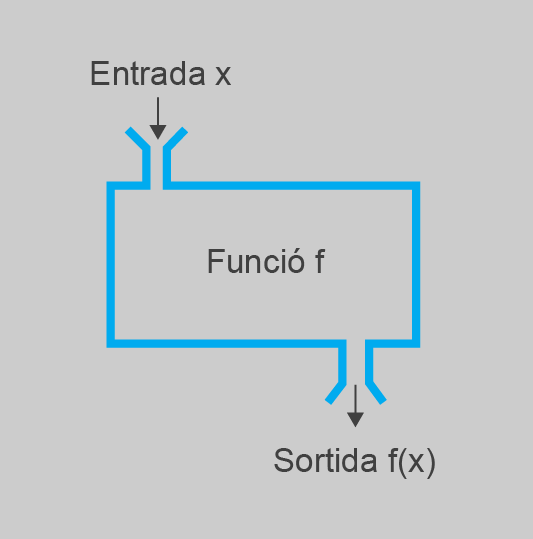

Parametrització de mètodes
L’objectiu principal del disseny descendent és oferir una metodologia que us permeti plantejar la creació d’un programa d’una manera molt semblant a com ho faríeu amb qualsevol altre problema de la vida real: dividint problemes complexos en d’altres més simples i fàcils de seguir. Un cop s’ha fet aquesta descomposició, els llenguatges ofereixen un mecanisme per associar a cada subproblema un bloc de codi concret. En Java, es tracta dels mètodes. El benefici d’usar mètodes, en la mesura correcta, és la generació de codi més fàcil d’entendre i on pot ser possible reutilitzar alguns blocs a diferents parts, sense haver de repetir el codi escrit.
L’aparició de blocs de codi repetit o gairebé igual indica un mal estil de programació.
Si bé la identificació de subproblemes d’acord a diferents nivells de complexitat és suficient per poder descompondre el programa en bocins de codi amb objectius parcials diferenciats, i fer-lo més fàcil de seguir, no és suficient per oferir un alt grau de reusabilitat. En la majoria de casos, el programa resultant dividit amb mètodes és directament equivalent a trossejar un programa on només hi ha el mètode principal. Això es deu al fet que tal com heu usat els mètodes fins ara, aquests servien per manipular un conjunt de variables, sovint globals, molt específic.
En realitat, a l’hora de plantejar quins subproblemes hi ha, i la seva declaració associada en forma de mètode al codi, a part del seu nom i què fan, també és possible definir certs aspectes vinculats a les dades que han de tractar: els seus paràmetres d’entrada i de sortida.
Un paràmetre és un identificador usat dins la descripció d’un procés, el valor del qual en realitat pot variar per diferents aplicacions d’aquest procés.
Paràmetres d'entrada
Els paràmetres d’entrada són una eina molt útil i extensament usada a l’hora de definir amb més detall les característiques dels subproblemes resultants d’una descomposició usant disseny descendent. Per començar, i com a resum breu d’aquest concepte, podeu quedar-vos amb la definició següent.
Un paràmetre d’entrada és un valor que s’estableix immediatament abans de seguir un procés, de manera que indica les dades que ha de tractar o que modifica el seu comportament.
Motivació: definició de problemes semblants
Si es descompon fins a dos nivells el problema de cuinar uns fideus japonesos vegetals, es podrien trobar els subproblemes següents:
- Recopilar ingredients
- Comprar al supermercat
- Disposar-los sobre el marbre
- Cuinar tallarines
- Preparar aigua
- Bullir tallarines
- Escórrer tallarines
- Deixar-les preparades
- Cuinar pastanagues
- Tallar pastanagues
- Fregir pastanagues
- Deixar pastanagues preparades
- Cuinar cebes
- Tallar cebes
- Fregir cebes
- Deixar cebes preparades
- Preparació final
- Barrejar ingredients amb salsa yakitori
- Saltar ingredients
- Preparar paella per saltar
- Cuinar remenant ingredients
- Deixar llest per servir
Partint d’aquest plantejament, la figura mostra la divisió ja més detallada, fins a un tercer nivell, dels processos de fregir cebes i pastanagues, usats en llocs ben diferents (3 i 4). En aquesta figura hi ha remarcades mitjançant quadres les diferències entre tots dos.
Ja a simple vista es pot veure que, tot i poder descompondre’s fins en sis nous subproblemes, es tracta de dos procediments molt semblants. De fet, si analitzeu amb detall els dos casos, us adonareu que només canvia l’aliment que cal fregir, però els subproblemes que cal anar resolent són exactament els mateixos en tots els casos. De fet, si tinguéssiu una certa visió de futur, podríeu arribar a adonar-vos que aquest escenari s’aplicaria fins i tot en descomposicions d’altres procediments semblants que no us cal usar aquí, com, per exemple, fer patates fregides. L’única condició és que, quan parleu de fregir, sempre heu d’estar-vos referint a aliments, és clar.
Dit en paraules informàtiques: donats aquests dos mètodes, només varia el valor de les dades que cal transformar, que sempre seran d’idèntic tipus. Però l’algorisme que cal usar és el mateix.
La conseqüència d’aquesta observació és que seria molt més còmode definir un seguit de passes de manera genèrica. Per exemple, anomenar el procés fregir aliment, on només s’usa el terme aliment dins de la descripció de les seves passes per referir-se a allò que es vol fregir. Llavors, sempre que es vol fregir un aliment concret, en les explicacions es reemplaça on posa aliment per allò que realment es vol fregir (cebes, pastanagues, patates, etc.) i s’aplica el procés tal com està escrit, sense haver de canviar res. Una única descripció serveix per fregir qualsevol cosa, no cal descriure un cas diferent per cada aliment.
Doncs bé, si féssiu això, el terme aliment encaixaria amb la definició de paràmetre d’entrada. El seu valor s’estableix abans de començar el procés, i segons aquest, condiciona allò que cal tractar (en aquest cas, fregir).
Un fet important en un cas com aquest és que el nombre de paràmetres d’entrada permesos no té perquè estar limitat a un. Podríeu definir tants com us facin falta per cada diferència existent, o per cada dada addicional que pugui variar segons la situació i que cal tenir en compte per realitzar-lo. Per exemple, suposeu que voleu preveure la possibilitat de fregir amb diferents quantitats d’oli. O sigui, solucionar el problema “fregir aliment amb certa quantitat d’oli”. En aquest cas, es podrien usar dos paràmetres d’entrada: l’aliment i la quantitat d’oli. Les passes a seguir continuarien essent gairebé iguals, llevat que la descripció seria genèrica tant a l’hora de referir-se a l’aliment que cal fregir, com pel que fa a quant d’oli cal posar a la paella. Així, doncs, la descripció del procés seria independent tant quant a què cal fregir com pel que fa a la quantitat d’oli a usar. Els valors concrets que cal aplicar dependrien de cada situació donada a l’hora de fregir:
- Fregir patates amb 400 cl d’oli: (aliment = patates, quantitat = 400 cl).
- Fregir cebes amb 200 cl d’oli : (aliment = cebes , quantitat = 200 cl).
- Fregir escalopes amb 400 cl d’oli: (aliment = escalopes, quantitat = 400 cl).
- Etc.
Per tant, un cop teniu dividit un problema general en subproblemes, caldrà estudiar quins d’ells són prou semblants per, en realitat, poder considerar que es tracta del mateix mitjançant l’aplicació de paràmetres d’entrada. Normalment, si el nom que s’ha posat als subproblemes és adient, això és fàcil de detectar, ja que en tindran de molt semblants, o fins i tot idèntics. Pot succeir que les divisions en subproblemes no siguin exactament idèntiques com en aquest exemple, però llavors valdrà la pena que reviseu la descomposició i reflexioneu sobre si, en realitat, hauria de ser igual.
És molt important triar correctament el nom dels subproblemes, perquè siguin descriptius.
A mesura que tingueu experiència, no us caldrà ni tan sols esperar al final i ja de ben segur que anireu detectant aquestes semblances sobre la marxa.
Declaració i ús de mètodes amb paràmetres d'entrada
De la mateixa manera que això estalvia molt d’espai en un llibre de cuina, aplicar aquest sistema en aplicar disseny descendent per descompondre un programa també és molt útil. Això vol dir que aquest fet també s’ha de poder preveure a la declaració i codificació d’un mètode. Per sort, tots els llenguatges de programació que permeten declarar funcions o mètodes preveuen aquesta possibilitat.
Declaració
La llista de paràmetres d’un mètode s’escriu entre els parèntesis en la seva declaració. Aquesta llista pren una estructura semblant a fer un seguit de declaracions de variables separades per comes. La sintaxi exacta seria la següent:
La declaració de paràmetres d’entrada no és obligatòria. Si no us calen paràmetres d’entrada per un mètode, no cal posar res entre els parèntesis, tal com heu fet fins ara. Tampoc hi ha límit en el nombre de paràmetres, però normalment és millor no excedir-se. De fet, un alt nombre de paràmetres en el mètode associat a un subproblema pot significar que no s’ha descompost suficientment.
Un cop un mètode té definits un seguit de paràmetres d’entrada, aquests es consideren variables declarades, amb àmbit dins de tot el seu codi. Aquestes variables poden ser usades com qualsevol altra dins el seu codi. Ara bé, tenen una peculiaritat, i és que d’entrada no se’ls assigna cap valor inicial, ja que vindrà donat segons com s’invoqui el mètode, com veureu tot seguit.
El mètode principal (main) es declara amb un paràmetre d’entrada: un array de String.
Únicament pel que fa a variables disponibles dins del bloc de codi del mètode, es pot considerar que aquest codi seria equivalent a fer:
Invocació
Quan un mètode s’ha declarat amb paràmetres d’entrada, cal tenir-los en compte durant la seva invocació. No hi ha prou a posar només el nom del mètode com fins ara. Per cada paràmetre cal assignar un valor, exactament en el mateix ordre en què s’han declarat a la llista. Aquest valor pot ser el resultat de qualsevol expressió: un literal, una variable, o una expressió més complexa. En qualsevol cas, el tipus resultant ha de coincidir amb el del paràmetre que ocupa el mateix ordre. Sintàcticament, això es fa posant els valors entre els parèntesis de la invocació, separats per comes:
Quan s’invoca un mètode amb un conjunt de paràmetres d’entrada declarats, el primer que fa el programa és mirar la llista de paràmetres i declarar, implícitament dins el codi del mètode, tantes variables com paràmetres d’entrada, amb els mateixos noms. Llavors agafa cada valor especificat a la invocació i copia, un per un i en el mateix ordre, aquests valors dins les variables creades a partir de la llista de paràmetres.
La millor manera de tenir una primera idea de com funciona tot plegat és amb un exemple senzill. El codi següent serveix per il·lustrar el comportament d’un mètode amb paràmetres d’entrada. No es tracta d’un programa complex resultat d’aplicar estrictament disseny descendent, només serveix per provar com funciona. Comproveu què fa en el vostre entorn de treball.
La figura, tot seguit, mostra un esquema del seu flux de control i què està passant a mesura que s’executen les instruccions del programa. Tot i que el codi del mètode mostrarMaxim es llista dos cops, només és per claredat, per diferenciar les execucions per cada invocació. En el codi font original només cal definir-lo un cop. Precisament, es tracta d’un cas de reaprofitament de codi. Fixeu-vos que la manera com es defineixen els paràmetres a la invocació del mètode serveix per donar valor a les variables a i b dins el mètode.
En aquest exemple els valors usats en invocar el mètode mostrarMaxim s’han expressat mitjançant literals, però també es podrien usar sense problemes variables o expressions, tal com mostra el codi llistat a continuació. En aquest cas, les expressions s’avaluen abans de procedir a executar les instruccions del mètode, de manera que sigui possible assignar correctament el valor resultant a cada paràmetre d’entrada. Proveu que fa exactament el mateix que l’exemple anterior.
Repte 1. Feu un programa que cridi diversos cops un mètode amb un únic paràmetre de tipus enter. Aquest mètode escriu per pantalla tants símbols “*” com el valor del paràmetre.
Manipulació dels paràmetres d'entrada
Un cop es comença a executar el codi del mètode, les variables representades pels seus paràmetres d’entrada poden ser usades com qualsevol variable declarada a la primera línia del programa: els seus valors poden ser llegits directament, poden usar-se dins d’expressions més o menys complexes, tenen un àmbit igual tot el mètode, etc. Fins i tot poden veure modificat el seu valor inicial. Ara bé, heu de tenir ben clar que els valors que contenen són còpies de l’original. Per tant, el valor usat a la invocació mai es veurà alterat.
Per exemple, proveu el codi següent i veieu com la variable i, usada a la invocació del codi, no es veu alterada en cap moment. Dins del paràmetre d’entrada a només hi ha una còpia del valor de i. No es tracta d’una associació directa.
El que ha succeït seria equivalent a haver fet:
En el llenguatge Java, però, aquesta norma només es compleix estrictament quan es tracta de tipus primitius. Quan el paràmetre és un array, sí que es modifica el valor. Si feu memòria, això es una conseqüència lògica de les seves propietats quan es copien variables de tipus array. En aquest cas, no es disposava realment de dues rèpliques idèntiques, sinó de dues variables diferents a partir de les quals accedir exactament a les mateixes dades.
Comproveu aquest fet mitjançant l’execució de l’exemple següent:
El que ha succeït ara seria equivalent a haver fet:
De fet, aquesta circumstància es dóna amb qualsevol tipus de dada compost del Java. L’única excepció són les cadenes de text (variables de la classe String). El seu comportament és igual al dels tipus primitius, ja que, recordeu, tenen la propietat de ser immutables. No és possible modificar-ne el contingut.
Repte 2. Feu un programa anomenat ModificarParametreString que comprovi que, efectivament, modificar el valor d’un paràmetre d’entrada de la classe String no té cap efecte sobre el valor original.
Paràmetres de sortida
Com en el cas dels paràmetres d’entrada, es partirà d’una definició i a partir d’aquí veureu quina és la utilitat i mode d’ús d’aquest tipus de paràmetres.
Un paràmetre de sortida indica un resultat final obtingut després de realitzar un procés determinat.
Motivació: Definició de problemes que generen un resultat concret
Si us fixeu una mica, us adonareu d’una característica comuna a molts dels casos en què un problema, en qualsevol nivell, es divideix en subproblemes més simples. Sovint, conceptualment, la manera com es resol és realitzant un seguit de tasques on s’obtenen resultats parcials, que al final són combinats o aprofitats dins el procés general per obtenir el resultat final (la resolució del problema).
Revisant la descomposició de la recepta de cuina, simplement en una observació a primer nivell, podreu detectar subproblemes on la seva conclusió repercuteix en l’obtenció d’un resultat parcial tangible, que és manipulat per subproblemes posteriors: diferents aliments cuinats preparats per separat. Partint d’aquests resultats parcials, s’obté el plat final, en combinar-los tots en les tasques associades al darrer subproblema. Aquesta circumstància queda resumida a la taula.
| Subproblema | Què fa | resultat obtingut |
|---|---|---|
| 1. Recopilar ingredients | Obté els ingredients base (tallarines, cebes, etc.) | Els diferents aliments a processar |
| 2. Cuinar tallarines | Dels aliments, processa les tallarines | Tallarines preparades |
| 3. Cuinar pastanagues | Dels aliments, processa les pastanagues | Pastanagues preparades |
| 4. Cuinar cebes | Dels aliments, processa les cebes | Cebes preparades |
| 5. Preparació final | A partir de tallarines, pastanagues i cebes, fa el plat final | Plat final |
Més enllà d’una recepta de cuina, segur que podeu pensar en molts casos semblants on els subproblemes a resoldre en realitat són un mecanisme per recopilar un conjunt de resultats parcials, necessaris abans de poder dur a terme la resolució del problema general.
- Per escriure un llibre, cal recopilar-ne els capítols.
- Per enviar un missatge electrònic, cal obtenir l’adreça de destinació o generar el text a enviar.
- Per muntar una màquina qualsevol, cal obtenir els seus components. Aquests, a la seva vegada, també es generen a partir del muntatge de peces encara més simples.
- Per vendre un producte, cal cercar el producte pròpiament, consultar-ne el preu o crear un tiquet.
- Etc.
- Cada mètode ha de ser una eina especialitzada per fer una única tasca concreta. Font: Joan Arnedo
Per tant, en la definició d’un subproblema també pot cobrar sentit indicar que quan aquest es resol, es produeix un resultat concret que podrà ser usat a posteriori per altres subproblemes. D’acord a la definició inicial, aquest resultat seria precisament el seu paràmetre de sortida.
Teòricament, es podria preveure una tasca que, en acabar, produeixi més d’un resultat, ja que ha resolt diversos problemes alhora. Per simplificar, només es tractarà el cas de subproblemes que produeixen un únic resultat, i per tant, a molt estirar amb un únic paràmetre de sortida. Per tant, a partir d’ara, sempre que es faci la descomposició d’un problema, caldrà que la plantegeu de manera que això es compleixi. Partireu del principi que si un subproblema produeix més d’un resultat tangible, és que no s’ha descomposat prou encara.
Evidentment, també es pot donar el cas que les tasques associades a un subproblema no donin cap resultat tangible que hagi de ser manipulat a posteriori. En aquest cas, no hi haurà cap paràmetre de sortida.
Declaració i ús de mètodes amb un paràmetre de sortida
Novament, dins de la declaració d’un mètode també és possible fer una translació directa d’aquesta propietat per tal de codificar la resolució d’un subproblema. Parlant ja en termes de mètodes dins els vostres programes, un mètode amb un paràmetre de sortida explicita que servirà per generar un resultat, amb un valor concret.
Declaració
Atès que un programa genera i tracta dades, el primer que cal decidir és a quin tipus de dades pertanyerà el valor d’aquest resultat. Un cop decidit, la sintaxi per declarar un mètode amb un paràmetre de sortida és la següent:
El tipus de paràmetre de sortida pot ser qualsevol, identificat per la paraula clau corresponent, com en el cas d’una variable. Si es vol indicar que no hi ha cap paràmetre de sortida, s’usa la paraula reservada void, tal com heu usat fins ara en tots els mètodes abans d’introduir aquest concepte.
El codi del mètode serà el que correspongui per tal d’obtenir el resultat esperat, d’acord al seu propòsit. En aquest aspecte, res canvia respecte a com heu programat mètodes fins ara. Ara bé, dins d’aquest codi caldrà decidir, d’entre totes les dades que tracta internament, quina es correspon al resultat final. Un cop ho heu establert, la sentència que indica que ja heu acabat la tasca a fer i disposeu del resultat és la següent:
Aquesta normalment s’escriuria la darrera de totes, al final del bloc de codi associat al mètode. On posa resultat es pot usar qualsevol expressió que avaluï el tipus declarat pel paràmetre de sortida: un literal, una variable, o una combinació qualsevol d’operands i operadors. Si es vol anar a poc a poc, normalment el més recomanable és que deseu el resultat en una variable i feu return d’aquesta (return nomVariable;).
De fet, tan bon punt s’invoca la sentència resultat, l’execució del mètode acaba immediatament i ja no s’executa cap instrucció més.
Escriure la sentència return és indispensable, ja que si no es posa havent declarat un paràmetre de sortida, hi haurà un error de compilació.
Donat el nom de la sentència usada, sovint al paràmetre de sortida se l’anomena també valor de retorn d’un mètode. A partir d’ara s’usarà també aquesta nomenclatura indistintament.
Evidentment, la millor manera de veure el funcionament de tot plegat és amb un exemple senzill. Suposeu que voleu definir un mètode que serveix per llegir correctament un únic valor enter des del teclat, de manera que ho faci definint un paràmetre de sortida. El seu codi podria ser el següent (Llegiu atentament els comentaris del codi, ja que indiquen el conjunt de decisions que cal anar fent per codificar-lo correctament.):
Invocació
L’aspecte més important quan hi ha mètodes amb un valor de retorn definit dins el vostre codi és la invocació, ja que hi ha una variació substancial respecte al model vist fins al moment. La sintaxi per invocar el mètode és exactament la mateixa, posant el nom i la llista de valors per als paràmetres d’entrada (si n’hi ha). En dur-se a terme la invocació, el flux d’execució salta també a les instruccions definides dins del seu bloc de codi. Ara bé, el que canvia és el comportament del mètode, ja que passa a considerar-se una expressió. Aquest avaluarà el valor resultant per a aquella invocació.
Com en tota expressió, si voleu obtenir el resultat calculat pel mètode per consultar-lo a posteriori, caldrà que el guardeu en una variable.
Per veure aquest procés, fixeu-vos en el codi següent, en el qual s’invoca el mètode definit anteriorment. Compileu-lo i executeu-lo, per veure què succeeix. La figura mostra un esquema de quin és el flux de control associat a la primera invocació i què està succeint en cada moment. Per claredat a la figura, el codi del mètode llegirEnterTeclat està repetit per les diferents invocacions, però, novament, tingueu en compte que en el codi font només apareix una única vegada. Simplement serveix per mostrar que el seu resultat pot variar per diferents invocacions.
Si feu memòria, aquest model d’invocació és exactament igual a la invocació de mètodes sobre una variable de tipus String. Això és perquè els mètodes definits per String estan declarats amb valors de retorn.
Repte 3. Modifiqueu l’exemple de manera que en lloc d’usar enters, funcioni amb reals (double). Assegureu-vos del seu correcte funcionament introduint nombres amb decimals.
Quan declarar paràmetres d'entrada o sortida
Com s’ha anat mostrant, l’ús de paràmetres, tant d’entrada com de sortida, és especialment útil per tal de convertir problemes molt semblants en un mateix i fer que el procés de descomposició d’un programa sigui conceptualment similar al d’un problema d’àmbit general. Ara bé, en realitat, el seu ús no s’hauria de limitar només a aquest escenari, sinó que hauria de ser generalitzat a qualsevol mètode. De fet, l’ús de paràmetres d’entrada i sortida no es tracta d’un cas especial diferenciat en la declaració de paràmetres, sinó el més habitual quan s’usen dins del codi d’un programa.
D’altra banda, fins ara, les variables globals s’han presentat com a mecanisme per compartir o traspassar dades entre mètodes de diferents nivells de descomposició. En realitat, però, també és el més normal usar paràmetres com a mecanisme per a aquesta tasca, reemplaçant majoritàriament l’ús de variables globals. A partir d’ara, es considerarà que és millor evitar usar-les, excepte en casos molt concrets. Per tant, davant la pregunta “quan declarar paràmetres d’entrada i sortida en un mètode?”, la resposta és “sempre que es pugui i tingui sentit”, independentment que un mètode en realitat s’invoqui una sola vegada o moltes dins del vostre programa.
Millorant la llegibilitat de codi amb paràmetres
Una part de la utilitat dels mètodes és millorar la comprensió del codi dels programes, de manera que no cal anar seguint i entenent les instruccions en un bloc massa llarg, i d’una sola vegada. Si els identificadors dels mètodes s’han escollit amb criteri, el codi és més fàcil de seguir. Aquest seguiment encara és més senzill si s’usen paràmetres, ja que no deixen cap mena de dubte sobre les dades que està tractant un mètode donat.
Per exemple, fixeu-vos en el codi que es mostra a continuació i plantegeu-vos sincerament les preguntes següents:
- En aquesta invocació, quins valors s’estan tractant a
unMetode? - Quin és el resultat per a aquest cas?
- Si el volguéssiu mostrar per pantalla, en quina variable es troba?
De fet, és impossible contestar les preguntes sense saber exactament com funciona aquest mètode. Hauríeu d’anar immediatament al seu codi font i inspeccionar-lo detalladament.
En canvi, compareu-lo amb aquest altre codi:
Sense ni tan sols saber què fa el mètode, no cal saber quin és el seu codi per respondre. Sense cap mena de dubte, els valors que s’estan tractant són 4 i 8, i el resultat estarà emmagatzemat a la variable k. Per tant, triar usar paràmetres en lloc de variables globals és especialment positiu per a la llegibilitat del codi.
El principi d'ocultació / encapsulació
Un motiu per usar de manera generalitzada paràmetres d’entrada i sortida en els vostres mètodes i limitar l’ús de les variables globals és garantir un dels principis més importants dins de la programació.
El principi d’encapsulació / ocultació es defineix formalment com la segregació dels elements en què es descompon un problema general, de manera que se separa la seva interfície contractual de la seva implementació.
Dit en altres paraules, un mètode ha de fer una única tasca molt concreta, de manera autocontinguda, i per poder ser invocat no cal saber realment com funciona, només què fa. Algú que no hagi programat el mètode ha de ser capaç d’usar-lo sense haver de saber quin és el seu codi o quines variables s’estan usant a dins seu. Si per poder invocar satisfactòriament un mètode es requereix saber part del seu codi, no s’està seguint aquest principi. De fet, fins a cert punt, aquest principi està lligat als motius exposats anteriorment per evitar l’ús de variables globals.
- 
- En darrera instància, els mètodes solen encapsular una transformació de les dades d'entrada en dades de sortida
Per tal de seguir fidelment el principi d’encapsulació / ocultació, pot ser útil establir unes pautes generals de comportament dels mètodes quan es volen considerar en forma parametritzada. L’aspecte principal per assolir aquesta fita és adonar-se que, tot i que a l’hora de declarar un mètode els paràmetres d’entrada i el de sortida són aspectes totalment independents sintàcticament, en la majoria de casos estan molt relacionats dins el seu codi (figura).
Normalment, els mètodes són utilitzats com un mecanisme per encapsular blocs de codi autocontinguts que realitzen càlculs o transformacions sobre els valors dels paràmetres d’entrada, a partir dels quals generar un resultat final concret. No és casualitat que en molts llenguatges als mètodes se’ls anomeni “funcions”, ja que es comporten exactament com funcions matemàtiques: partint d’uns valors d’entrada donats, s’aplica una fórmula (en aquest cas, un procés) mitjançant la qual se’n calcula el resultat.
Exemples de problemes típics que heu vist i que compleixen la condició que, donats uns valors d’entrada, cal calcular un resultat concret, poden ser:
- El màxim (o el mínim) entre un conjunt de valors (per exemple, un array).
- La mitjana aritmètica dels valors dins un array.
- Donat un valor de nota, transformar-la en cadena de text (per exemple, 5 = Aprovat).
- Saber els dies que té un mes donat.
- Cercar la posició d’un valor concret dins un array (si n’hi ha).
Exemples de mètodes parametritzats
A mode d’exemple, tot seguit es mostra la traducció d’alguns dels blocs de codi associats a problemes amb els quals heu treballat en mètodes amb paràmetres d’entrada i un valor de retorn. Dins del codi trobareu en format comentari les explicacions sobre quina mena de dades tracten, i per tant, quins són els seus paràmetres d’entrada i sortida.
En aquests exemples només es mostra el codi associat al mètode que realitza cada tasca, no el programa complet, amb els mètodes principal (main) i inici.
Calcular el mínim entre dos enters
Per invocar-lo per calcular el mínim entre 4 i 10, i desar el resultat en una variable anomenada res, es faria:
Repte 4. Usant aquest mètode, feu un programa que calculi quin és el valor mínim entre els valors 3, 6, 10 i 15, i el mostri per pantalla.
Calcular el màxim dins un array de reals
Per invocar-lo per calcular el màxim a l’array anomenat valors i desar el resultat en una variable anomenada res, es faria:
Calcular la mitjana aritmètica dels valors d'un array
Per invocar-lo per calcular la mitjana de l’array valors i desar el valor a la variable res, es faria:
Transformar una nota a text
Per invocar-lo per saber el text que correspon a la nota 7.8, desar el valor a la variable textNota i mostrar-lo per pantalla, es faria:
Repte 5: feu un programa que, donat un conjunt de cinc notes parcials emmagatzemades en un array de reals, mostri el text de la nota final (la mitjana de totes cinc). Pista/Nota: tingueu en compte que el paràmetre d’entrada de l’exemple mitjana és un array d’enters. (No podeu usar el seu codi directament, l’haureu de modificar.)
Calcular els dies d'un mes
Per invocar-lo per saber els dies del febrer i desar-los a la variable res, es faria:
Cercar la posició on hi ha un valor concret a un array d'enters
Per invocar-lo per trobar si en alguna posició d’un array anomenat valors hi ha el valor 7 i desar l’índex d’aquesta posició a la variable res, es faria:
Repte 6. Feu un programa que pregunti un número enter pel teclat. Llavors, donat un conjunt de valors dins un array, ha de calcular quants cops apareix el número introduït. Useu mètodes tant per preguntar el número com per cercar el seu nombre d’aparicions. Declareu l’array on cal fer la cerca com una variable dins del mètode inici, inicialitzada amb valors concrets de la vostra elecció.
Un exemple de disseny descendent amb mètodes parametritzats
Per saber com usar mètodes basats en paràmetres d’entrada i sortida (el més habitual quan feu programes), tot seguit veureu un nou exemple de procés complet de descomposició d’un problema relativament complex mitjançant disseny descendent. Aquest cop, però, els subproblemes s’analitzaran també des del punt de vista de quines dades són necessàries per a la seva resolució (entrada) i quin resultat concret produeixen (sortida). Aquest cop, però, no es detallaran tots els aspectes de la descomposició. Aquest exemple serveix principalment com a fil argumental per ressaltar alguns aspectes importants de l’ús de mètodes dins un programa més complex, com la propagació dels valors entre invocacions dels mètodes.
En aquest cas, el programa que es vol realitzar és una versió una mica més avançada del joc d’endevinar un número secret. En aquest cas, es tracta d’endevinar una combinació de 5 lletres a l’atzar. Sempre que es realitza un intent, el programa dóna una pista. Per cada lletra, s’indica si és totalment incorrecta (.), si s’ha encertat (O), o si aquesta lletra existeix, però no en aquesta posició (X). El programa s’executa fins que l’usuari encerta, moment en què es dóna un missatge de felicitació.
El sistema de joc d’endevinar un número secret és semblant al del Mastermind.
Per aclarir aquest funcionament, tot seguit es dóna un exemple d’execució:
Descomposició de problema
Novament, el primer pas a fer, abans de posar-se a generar codi, és seure una estona a pensar i fer una proposta sobre quines dades caldrà tractar i com es podria descompondre el problema.
Identificació de les dades a tractar
En una ullada preliminar, per a aquest problema, les dades més importants que cal tractar en general són bàsicament dues: la paraula secreta i la paraula que respon l’usuari. També, en algun moment, caldrà generar la resposta del programa amb la pista dient quines lletres ha encertat i controlar quan cal acabar l’execució, un cop s’ha encertat.
Primer nivell de descomposició
Abans de poder fer res, caldrà generar la paraula secreta de manera aleatòria. Un cop fet, el programa es dedica a preguntar la resposta de l’usuari i tot seguit analitzar-la per generar una resposta amb la pista, o la felicitació si ha encertat. Per tant, en un primer nivell es podria descompondre com:
- Generar paraula secreta.
- Preguntar resposta.
- Resoldre resposta.
Segon nivell de descomposició
Per veure si cal un segon nivell de descomposició, cal analitzar si els subproblemes definits en el primer nivell es consideren complexos, o si més no, si conceptualment són més fàcils d’entendre si es tornen a descompondre.
- Generar paraula secreta. Generar una paraula secreta es pot considerar com la generació repetides vegades d’una única lletra aleatòria.
- Preguntar resposta. D’entrada, llegir una cadena de text des del teclat és un problema àmpliament tractat i que ja hauríeu de saber resoldre. Per tant, no és gens complex.
- Resoldre resposta. Resoldre la resposta vol dir que, primer de tot, cal generar la pista i després veure si es correspon amb una combinació guanyadora (
OOOOO) o no. Per tant, es podria dividir en aquests dos subproblemes.
- Generar paraula secreta.
- Generar lletra aleatòria.
- Muntar paraula.
- Preguntar resposta.
- Resoldre resposta.
- Generar pista.
- Donar resposta.
Tercer nivell de descomposició
Novament, s’analitzen els nous subproblemes per veure si cal continuar descomponent o no.
- Generar lletra aleatòria. Aquest subproblema requereix una mica d’imaginació per plantejar-lo (i una mica de coneixement de quines instruccions té Java que us puguin ajudar). Per tant, segons com es plantegi, serà fàcil o difícil. En aquest exemple es farà de la manera següent. Java permet accedir a l’hora actual amb precisió de nanosegons usant una instrucció especial. Això és un temps tan reduït que sempre s’obtindran valors diferents per cada execució. Per tant, és com generar valors a l’atzar. Atès que ja sabeu com, partint d’un enter, obtenir text (per exemple, en convertir un número de mes en el seu nom), ja s’ha arribat a un problema prou simple.
- Muntar paraula. Es tractaria de concatenar 5 lletres per crear un
String. Aquesta tasca es pot resoldre directament amb l’operador+de les cadenes de text. - Generar pista. Caldrà comparar la paraula secreta i la resposta lletra a lletra. Això es pot fer amb una estructura de repetició, que no és massa complexa, i les lletres (els caràcters) es poden comparar fàcilment.
- Donar resposta. Es tracta de fer una comparació i mostrar un missatge per pantalla. És clarament una estructura de selecció, la qual cosa és senzilla.
''System.nanoTime''()
Aquesta és la instrucció que accedeix al temps amb precisió de nanosegons (una milmilionèsima de segon, un segon = 1.000.000.000 nanosegons).
Per tant, ja heu acabat la descomposició.
Implementació del segon nivell de descomposició
Un cop establerta la descomposició a partir de la qual treballar, ja es podria establir una primera versió de l’esquelet de la classe. Per fer això, ara seria necessària una etapa de reflexió addicional, ja que per establir les capçaleres dels mètodes cal tenir ben clars quins seran els seus paràmetres d’entrada i de sortida. Malauradament, això obliga fins a cert punt a tenir una visió general de com ha de funcionar tot el programa i les interaccions entre mètodes.
A causa d’això, en un cas com aquest pot ser millor anar a poc a poc i només aturar-se a pensar la declaració exacta de cada mètode amb els seus paràmetres quan correspongui, seguint pas per pas cada nivell de descomposició. A part d’això, sí que és possible escriure ja el mètodes main i l’esquelet del mètode inici, ja que sempre segueixen la mateixa estructura.
Donada la descomposició del problema, cal declarar dos mètodes, que es poden dir:
Normalment, els mètodes que fan càlculs exclusivament a partir d’entrada / sortida (teclat, rellotge intern, etc.) no tenen paràmetres d’entrada.
generarLletraAleatoria. Genera una lletra a l’atzar. Per tant, el valor de retorn serà un caràcter. No necessita cap entrada per fer aquest càlcul, ja que tot el que cal s’obté directament d’una instrucció de Java per saber els nanosegons presents.generarPista. Genera la pista que cal mostrar per pantalla (per exemple,OXX.O). Això és un text, per la qual cosa el valor de retorn serà unString. Per poder fer aquesta tasca, cal comparar la resposta de l’usuari (un text) i el valor secret (un altre text). Per tant, calen dos paràmetres d’entrada, també de tipusString. En el codi d’aquest mètode de ben segur caldrà manipular les cadenes de text.
Donat això, ara mateix, el codi del programa podria ser així. Fixeu-vos atentament que la traducció d’un enter aleatori a un caràcter aleatori es fa amb l’ajut d’una taula de traducció en forma de text amb tot l’alfabet (constant abc):
Implementació del primer nivell de descomposició
Un cop finalitzat un nivell, es pot pujar al següent. D’acord a la descomposició del problema general, es pot procedir a establir els noms dels nous mètodes i quins haurien de ser els seus paràmetres. En aquest cas, però, per a alguns dels mètodes val la pena estudiar la seva implementació de manera molt més detallada, ja que aquest exemple ha estat cercat amb la intenció que apareguin alguns aspectes interessants quan interactuen mètodes amb paràmetres d’entrada i/o sortida.
D’entrada, aquí teniu una descripció general:
generarParaulaSecreta. Genera la paraula secreta, composta per 5 lletres. Per tant, el resultat és un text (un valor de tipusString). Com que parteix de zero per fer-ho, no li calen paràmetres d’entrada.preguntarResposta. Com en exemples anteriors, haurà de ser un mètode que llegeix un text des del teclat i el retorna. Per tant, tampoc li calen paràmetres d’entrada i retornarà el text llegit.resoldreResposta. Resoldre una resposta vol dir generar la pista, establir si s’ha encertat, i mostrar un missatge en conseqüència. Quan es tracti amb més detall ja veureu quins haurien de ser els seus paràmetres.
generarParaulaSecreta
Aquest mètode es basa en l’ús repetit de la generació d’un caràcter individual per fer una paraula de 5 lletres. Per tant, invoca internament a generarLletraAleatoria i a partir de cada resultat crea el seu propi resultat. A part d’això, el fet que un mètode pugui invocar, a la seva vegada, un altre mètode, no té cap altra peculiaritat.
preguntarResposta
Escriure text demanant a l’usuari que introdueixi una paraula pel teclat i llegir-la en forma de cadena de text no és excessivament complicat, sobretot, atès que no cal fer comprovacions de tipus, com passa amb números (hasNextInt, etc.). Ara bé, si es vol ser estricte, caldria comprovar almenys que la resposta segueix el format esperat: té cinc lletres i està formada de caràcters de l’alfabet en minúscula (a…z). Ara bé, comprovar aquestes dues coses no es fa en una o dues línies de codi.
En casos com aquest, quan es vol fer una comprovació de certa complexitat sobre el format d’una lectura de dades escrites per l’usuari, és especialment útil plantejar-se-la com un nou subproblema. Separar tot el codi associat a la comprovació en un mètode a part simplifica el codi i millora la seva comprensió. En aquest cas, el nou mètode es podria dir comprovarResposta.
Aquesta mena de mètodes que serveixen per establir si un valor es considera correcte pràcticament sempre tenen el mateix format: l’entrada són els valors a comprovar i la sortida, un booleà. Cal fer que aquesta sigui true si els valors es consideren correctes i false en cas contrari (“És el valor correcte? Cert/Fals”). Llavors, amb una estructura de selecció que compari el valor de retorn és fàcil actuar en conseqüència.
Per tant, tot just s’acaba de presentar una situació on, tot i que d’entrada s’ha considerat que no calia descompondre més, a posteriori s’ha establert que és millor fer-ho. Aquest fet no és gaire estrany en el procés de generació d’un programa.
Si us fixeu, el codi de comprovarResposta té una peculiaritat. Hi ha més d’una sentència return. Això és possible, però per entendre què està fent, cal tenir present un aspecte essencial d’aquesta sentència: quan s’executa, el mètode acaba immediatament i el valor de retorn és igual a l’indicat dins la sentència return. La figura esquematitza el funcionament del mètode d’acord a aquest comportament, segons diferents situacions.
resoldreResposta
Aquest mètode el primer que fa és invocar generarPista i mostrar el valor retornat. Ara bé, segons si aquest valor indica que si s’ha encertat (OOOOO) o no, actua en conseqüència. El que fa que valgui la pena estudiar-lo amb detall és veure quins paràmetres té.
La tècnica comprovarResposta també és habitual i us pot resultar molt útil per simplificar el codi dels vostres programes.
D’entrada només mostra coses per pantalla, no calcula res, per la qual cosa no cal cap valor de retorn. Ara bé, per poder invocar correctament generarPista, li cal disposar dels valors del text secret i la resposta de l’usuari. Aquests dos valors no els genera ell, sinó que són generats per altres mètodes. Per tant, per poder-ne disposar, li faran falta com paràmetres d’entrada.
En aquest mètode és interessant observar que, internament, els dos paràmetres no són usats mai directament. Només serveixen per poder invocar correctament el mètode generarPista. Aquesta situació és la que s’anomena propagació de paràmetres entre mètodes ubicats en diferents nivells de descomposició. Els valors disposats en el mètode de més nivell es passen (propaguen) a mètodes de nivell inferior. Atès que un paràmetre d’entrada es considera com una variable qualsevol dins el codi d’un mètode, no hi ha cap problema a fer-ho.
La figura esquematitza aquest procés. També és molt important veure com els valors es van copiant successivament a les variables definides pels paràmetres, independentment del fet que el seu nom vagi variant en cada cas.

Implementació del problema general
Un cop implementats tots els subproblemes, ha arribat el moment d’implementar el codi del problema general: el mètode inici. Primer de tot el que farà el programa és generar el valor secret, i després anar repetint la pregunta a l’usuari en mostrar la resposta. Això es pot fer usant una estructura de repetició controlada per un semàfor, que inicialment està a false i canvia a true quan l’usuari ha encertat. En una primera aproximació, el codi seria:
Ara bé, en aquest cas, el problema general també presenta una situació interessant. Sense variables globals, com es pot establir el valor de la variable encertat a true? Atès que és millor no usar variables globals, la resposta ha d’estar per força en el paràmetre d’entrada o sortida d’algun mètode. En un cas com aquest, on un mètode necessita un valor per poder dur a terme la seva tasca, la resposta exacta està en afegir un paràmetre de sortida a algun mètode.
Si observeu el codi, el mètode que estableix si la partida ha acabat (s’ha encertat o no) és resoldreResposta, ja que és qui compara la pista amb el valor associat a encertar la paraula secreta. D’entrada, aquest mètode no té cap valor de retorn. El que es pot fer és afegir un valor de retorn que us digui si cal acabar la partida o no (un booleà). D’aquesta manera, el codi seria:
Aquest és un cas on cal establir paràmetres d’un mètode a posteriori, davant d’una necessitat imprevista d’un mètode de nivell superior. Tampoc es tracta d’una situació infreqüent.
El procés de descomposició en nivell descendent no sempre és possible realitzar-lo linealment. Sovint cal recular i reconsiderar decisions preses anteriorment.
Implementació final
Per claredat, tot seguit es llista el resultat final. Per fer el codi més polit i llegible, alguns valors concrets s’han reemplaçat per constants (la longitud del text a descobrir i el text que indica que tot és correcte).
Solucions als reptes proposats
Repte 1
Repte 2
Repte 3
Repte 4
Repte 5
Repte 6